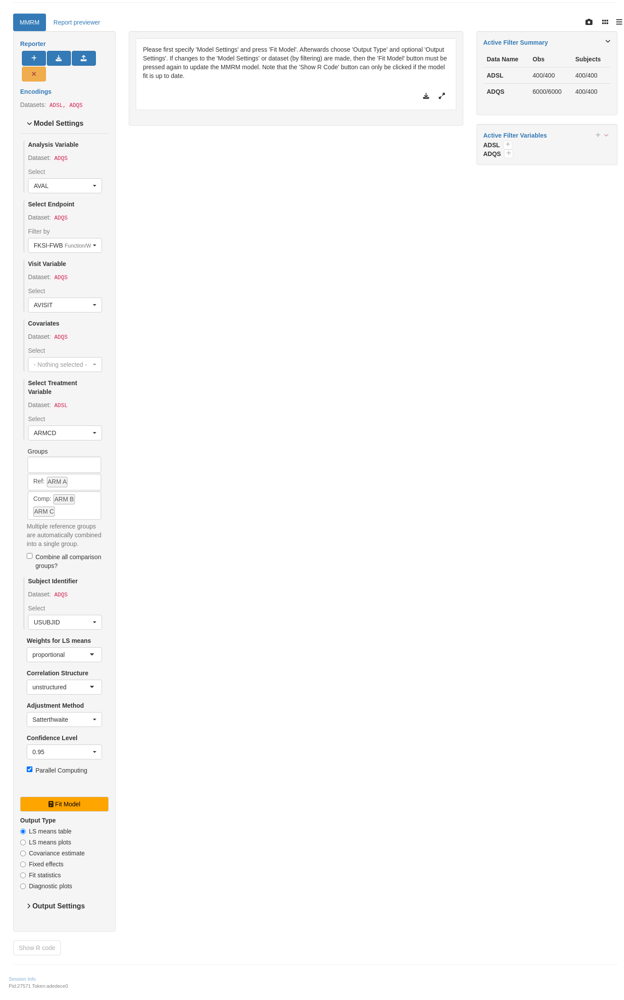

MMRMG01
Plots for Mixed-Effect Model Repeated Measures Analysis
Given an MMRM fitted with s_mmrm, g_mmrm_lsmeans displays for each visit the adjusted means within group and/or difference in adjusted means between groups. g_mmrm_diagnostic displays marginal residual plots for evaluating model fit.
Considering the treatment variable in the model
Considering the treatment variable in the model, with lines

Considering the treatment variable in the model, with statistics table

Users can choose to display both estimates and contrasts together by running g_mmrm_lsmeans(mmrm_results).


Code
library(dplyr)
library(tern.mmrm)
library(nestcolor)
adsl <- random.cdisc.data::cadsl
adqs <- random.cdisc.data::cadqs
adqs_f <- adqs %>%
dplyr::filter(PARAMCD == "FKSI-FWB" & !AVISIT %in% c("BASELINE")) %>%
droplevels() %>%
dplyr::mutate(ARM = factor(ARM, levels = c("B: Placebo", "A: Drug X", "C: Combination"))) %>%
dplyr::mutate(AVISITN = rank(AVISITN) %>% as.factor() %>% as.numeric() %>% as.factor())
mmrm_results <- fit_mmrm(
vars = list(
response = "AVAL",
covariates = c("STRATA2"),
id = "USUBJID",
arm = "ARM",
visit = "AVISIT"
),
data = adqs_f
)
teal App
Code
library(teal.modules.clinical)
## Data reproducible code
data <- teal_data()
data <- within(data, {
library(dplyr)
ADSL <- random.cdisc.data::cadsl
ADQS <- random.cdisc.data::cadqs %>%
filter(ABLFL != "Y" & ABLFL2 != "Y") %>%
filter(AVISIT %in% c("WEEK 1 DAY 8", "WEEK 2 DAY 15", "WEEK 3 DAY 22")) %>%
mutate(
AVISIT = as.factor(AVISIT),
AVISITN = rank(AVISITN) %>%
as.factor() %>%
as.numeric() %>%
as.factor() # making consecutive numeric factor
)
})
datanames <- c("ADSL", "ADQS")
datanames(data) <- datanamesWarning: `datanames<-()` was deprecated in teal.data 0.6.1.
ℹ invalid to use `datanames()<-` or `names()<-` on an object of class
`teal_data`. See ?names.teal_dataCode
join_keys(data) <- default_cdisc_join_keys[datanames]
arm_ref_comp <- list(
ARMCD = list(
ref = "ARM A",
comp = c("ARM B", "ARM C")
)
)
## Reusable Configuration For Modules
ADQS <- data[["ADQS"]]
## Setup App
app <- init(
data = data,
modules = modules(
tm_a_mmrm(
label = "MMRM",
dataname = "ADQS",
aval_var = choices_selected(c("AVAL", "CHG"), "AVAL"),
id_var = choices_selected(c("USUBJID", "SUBJID"), "USUBJID"),
arm_var = choices_selected(c("ARM", "ARMCD"), "ARMCD"),
visit_var = choices_selected(c("AVISIT", "AVISITN"), "AVISIT"),
arm_ref_comp = arm_ref_comp,
paramcd = choices_selected(
choices = value_choices(ADQS, "PARAMCD", "PARAM"),
selected = "FKSI-FWB"
),
cov_var = choices_selected(c("BASE", "AGE", "SEX", "BASE:AVISIT"), NULL),
conf_level = choices_selected(c(0.95, 0.9, 0.8), 0.95)
)
)
)
shinyApp(app$ui, app$server)
Reproducibility
Timestamp
[1] "2024-11-16 17:34:37 UTC"Session Info
─ Session info ───────────────────────────────────────────────────────────────
setting value
version R version 4.4.1 (2024-06-14)
os Ubuntu 22.04.5 LTS
system x86_64, linux-gnu
ui X11
language (EN)
collate en_US.UTF-8
ctype en_US.UTF-8
tz Etc/UTC
date 2024-11-16
pandoc 3.4 @ /usr/bin/ (via rmarkdown)
─ Packages ───────────────────────────────────────────────────────────────────
package * version date (UTC) lib source
backports 1.5.0 2024-05-23 [1] RSPM
brio 1.1.5 2024-04-24 [1] RSPM
broom 1.0.7 2024-09-26 [1] RSPM
bslib 0.8.0 2024-07-29 [1] RSPM
cachem 1.1.0 2024-05-16 [1] RSPM
callr 3.7.6 2024-03-25 [1] RSPM
checkmate 2.3.2 2024-07-29 [1] RSPM
chromote 0.3.1 2024-08-30 [1] RSPM
cli 3.6.3 2024-06-21 [1] RSPM
coda 0.19-4.1 2024-01-31 [1] CRAN (R 4.4.1)
codetools 0.2-20 2024-03-31 [2] CRAN (R 4.4.1)
colorspace 2.1-1 2024-07-26 [1] RSPM
cowplot 1.1.3 2024-01-22 [1] RSPM
curl 6.0.1 2024-11-14 [1] RSPM
digest 0.6.37 2024-08-19 [1] RSPM
dplyr * 1.1.4 2023-11-17 [1] RSPM
emmeans 1.10.5 2024-10-14 [1] RSPM
estimability 1.5.1 2024-05-12 [1] RSPM
evaluate 1.0.1 2024-10-10 [1] RSPM
fansi 1.0.6 2023-12-08 [1] RSPM
farver 2.1.2 2024-05-13 [1] RSPM
fastmap 1.2.0 2024-05-15 [1] RSPM
fontawesome 0.5.2 2023-08-19 [1] RSPM
formatR 1.14 2023-01-17 [1] CRAN (R 4.4.1)
formatters * 0.5.9.9003 2024-11-16 [1] https://p~
geepack 1.3.12 2024-09-23 [1] RSPM
generics 0.1.3 2022-07-05 [1] RSPM
ggplot2 3.5.1 2024-04-23 [1] RSPM
glue 1.8.0 2024-09-30 [1] RSPM
gtable 0.3.6 2024-10-25 [1] RSPM
htmltools 0.5.8.1 2024-04-04 [1] RSPM
htmlwidgets 1.6.4 2023-12-06 [1] RSPM
httpuv 1.6.15 2024-03-26 [1] RSPM
jquerylib 0.1.4 2021-04-26 [1] RSPM
jsonlite 1.8.9 2024-09-20 [1] RSPM
knitr 1.49 2024-11-08 [1] RSPM
labeling 0.4.3 2023-08-29 [1] RSPM
later 1.3.2 2023-12-06 [1] RSPM
lattice 0.22-6 2024-03-20 [2] CRAN (R 4.4.1)
lifecycle 1.0.4 2023-11-07 [1] RSPM
logger 0.4.0 2024-10-22 [1] RSPM
magrittr * 2.0.3 2022-03-30 [1] RSPM
MASS 7.3-61 2024-06-13 [2] CRAN (R 4.4.1)
Matrix 1.7-1 2024-10-18 [1] RSPM
memoise 2.0.1 2021-11-26 [1] RSPM
mime 0.12 2021-09-28 [1] RSPM
mmrm 0.3.14.9001 2024-11-16 [1] https://p~
multcomp 1.4-26 2024-07-18 [1] CRAN (R 4.4.1)
munsell 0.5.1 2024-04-01 [1] RSPM
mvtnorm 1.3-2 2024-11-04 [1] RSPM
nestcolor * 0.1.2.9017 2024-11-16 [1] https://p~
nlme 3.1-166 2024-08-14 [2] CRAN (R 4.4.1)
parallelly 1.39.0 2024-11-07 [1] RSPM
pillar 1.9.0 2023-03-22 [1] RSPM
pkgcache 2.2.3 2024-09-12 [1] RSPM
pkgconfig 2.0.3 2019-09-22 [1] RSPM
processx 3.8.4 2024-03-16 [1] RSPM
promises 1.3.0 2024-04-05 [1] RSPM
ps 1.8.1 2024-10-28 [1] RSPM
purrr 1.0.2 2023-08-10 [1] RSPM
R6 2.5.1 2021-08-19 [1] RSPM
random.cdisc.data 0.3.16.9001 2024-11-16 [1] https://p~
rbibutils 2.3 2024-10-04 [1] RSPM
Rcpp 1.0.13-1 2024-11-02 [1] RSPM
Rdpack 2.6.2 2024-11-15 [1] RSPM
rlang 1.1.4 2024-06-04 [1] RSPM
rmarkdown 2.29 2024-11-04 [1] RSPM
rtables * 0.6.10.9004 2024-11-16 [1] https://p~
sandwich 3.1-1 2024-09-15 [1] CRAN (R 4.4.1)
sass 0.4.9 2024-03-15 [1] RSPM
scales 1.3.0 2023-11-28 [1] RSPM
sessioninfo 1.2.2 2021-12-06 [1] any (@1.2.2)
shiny * 1.9.1 2024-08-01 [1] RSPM
shinycssloaders 1.1.0 2024-07-30 [1] RSPM
shinyjs 2.1.0 2021-12-23 [1] RSPM
shinyvalidate 0.1.3 2023-10-04 [1] RSPM
shinyWidgets 0.8.7 2024-09-23 [1] RSPM
stringi 1.8.4 2024-05-06 [1] RSPM
stringr 1.5.1 2023-11-14 [1] RSPM
survival 3.7-0 2024-06-05 [2] CRAN (R 4.4.1)
teal * 0.15.2.9086 2024-11-16 [1] https://p~
teal.code * 0.5.0.9018 2024-11-16 [1] https://p~
teal.data * 0.6.0.9021 2024-11-16 [1] https://p~
teal.logger 0.3.0.9002 2024-11-16 [1] https://p~
teal.modules.clinical * 0.9.1.9031 2024-11-16 [1] https://p~
teal.reporter 0.3.1.9016 2024-11-16 [1] https://p~
teal.slice * 0.5.1.9016 2024-11-16 [1] https://p~
teal.transform * 0.5.0.9016 2024-11-16 [1] https://p~
teal.widgets 0.4.2.9022 2024-11-16 [1] https://p~
tern * 0.9.6.9015 2024-11-16 [1] https://p~
tern.gee 0.1.5.9004 2024-11-16 [1] https://p~
tern.mmrm * 0.3.2.9002 2024-11-16 [1] https://p~
testthat 3.2.1.1 2024-04-14 [1] RSPM
TH.data 1.1-2 2023-04-17 [1] CRAN (R 4.4.1)
tibble 3.2.1 2023-03-20 [1] RSPM
tidyr 1.3.1 2024-01-24 [1] RSPM
tidyselect 1.2.1 2024-03-11 [1] RSPM
TMB 1.9.15 2024-09-09 [1] RSPM
utf8 1.2.4 2023-10-22 [1] RSPM
vctrs 0.6.5 2023-12-01 [1] RSPM
webshot 0.5.5 2023-06-26 [1] CRAN (R 4.4.1)
webshot2 0.1.1 2023-08-11 [1] RSPM
websocket 1.4.2 2024-07-22 [1] RSPM
withr 3.0.2 2024-10-28 [1] RSPM
xfun 0.49 2024-10-31 [1] RSPM
xtable 1.8-4 2019-04-21 [1] RSPM
yaml 2.3.10 2024-07-26 [1] RSPM
zoo 1.8-12 2023-04-13 [1] CRAN (R 4.4.1)
[1] /usr/local/lib/R/site-library
[2] /usr/local/lib/R/library
──────────────────────────────────────────────────────────────────────────────
.lock file
Download the .lock file and use renv::restore() on it to recreate environment used to generate this website.